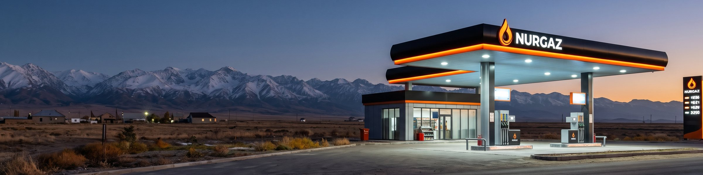
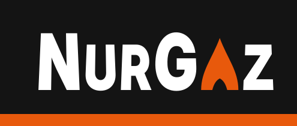
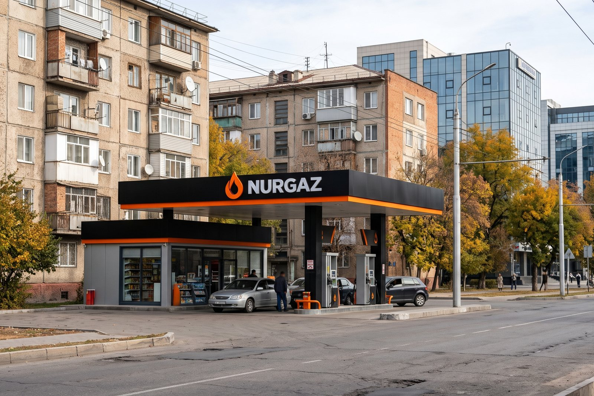
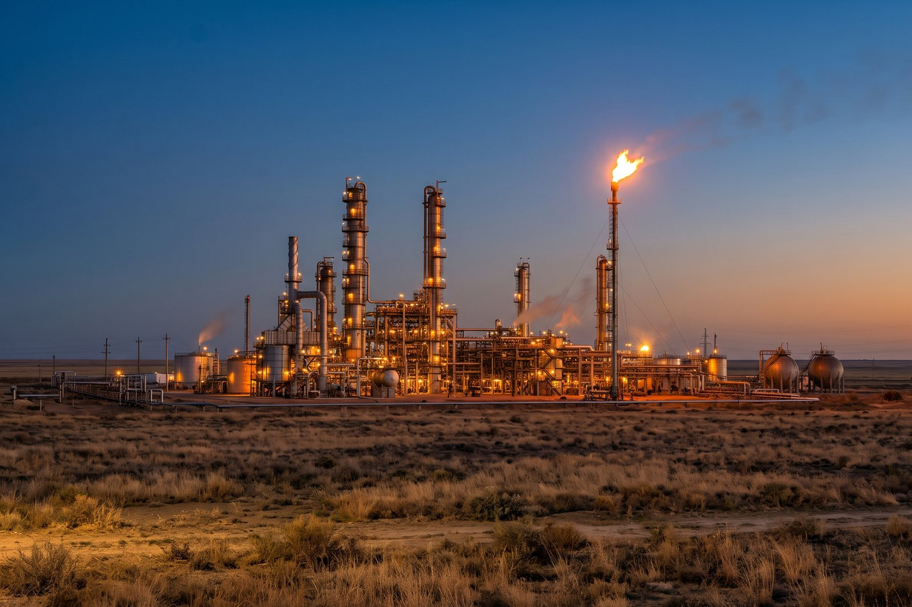
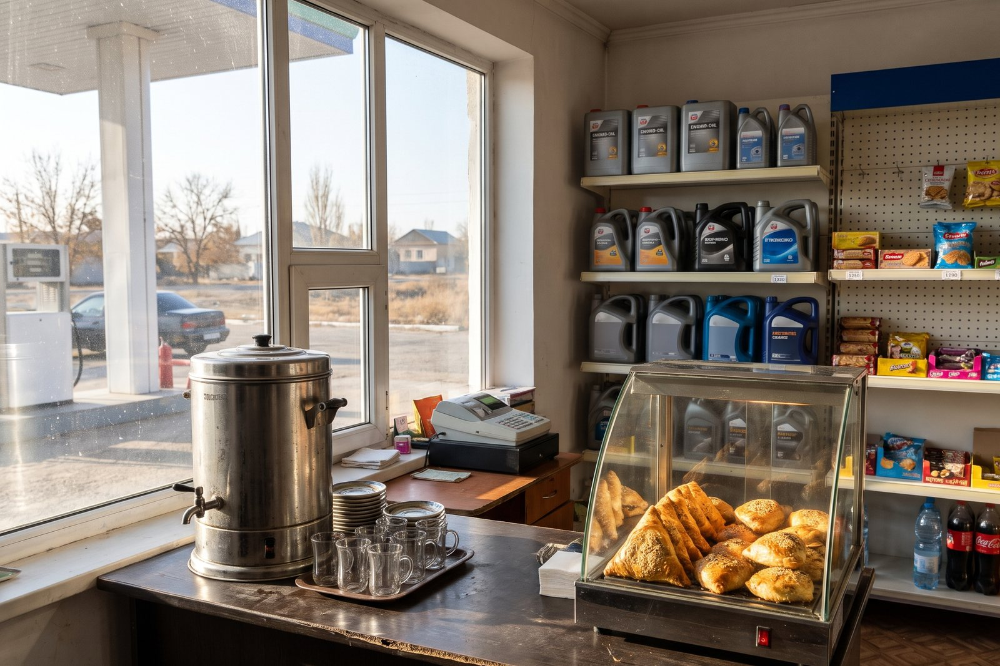
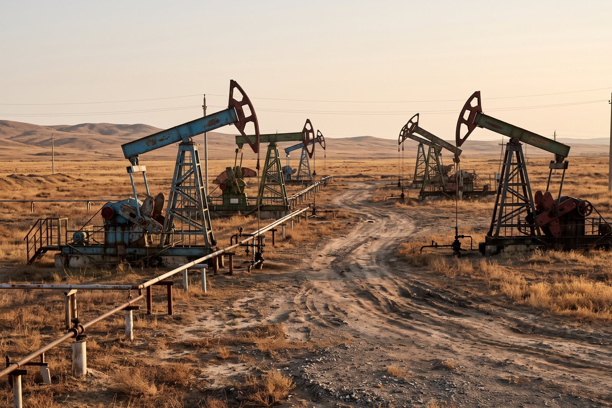
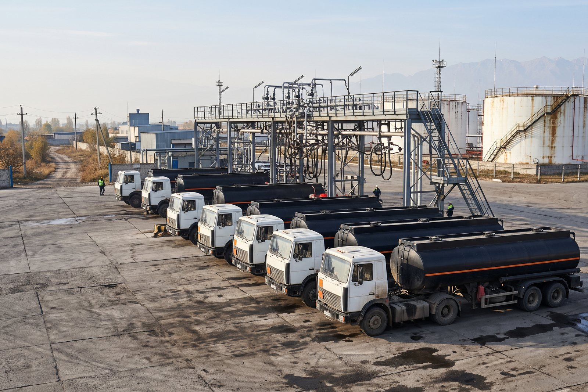
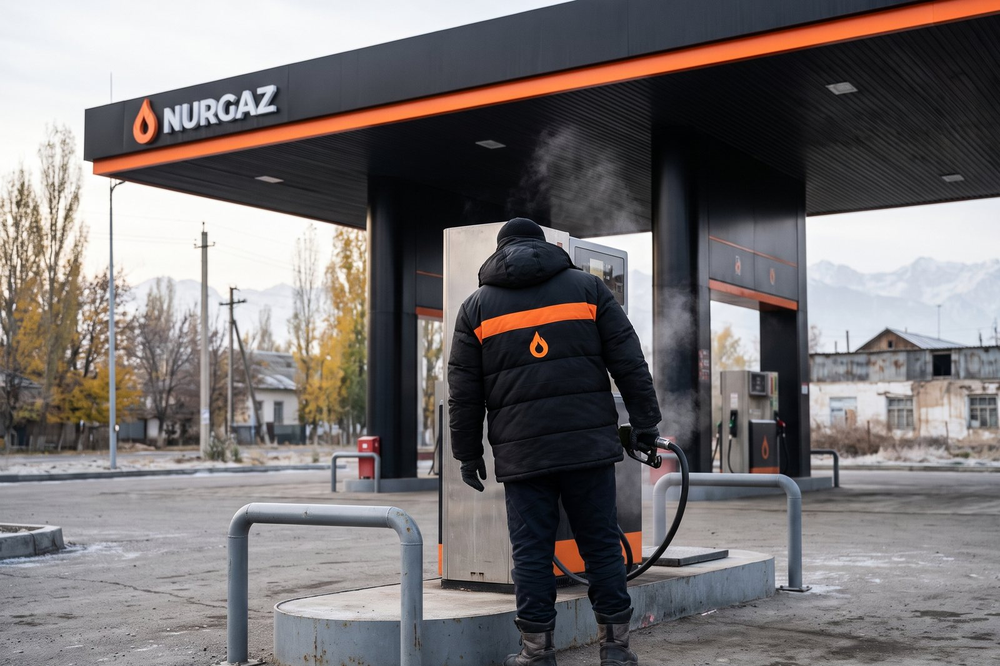

NurGaz Pinned
Winter diesel from 15 November at every NurGaz station. Same price as summer diesel. Fill up before the first frost and keep the tank above a quarter.
♥ 67 · Comment · Share
Chu oil, refined in Nurzhan. On your road since 1993.
Six stations were rebuilt in 2025: wider lanes, card payment at every pump, a shop with hot tea and samsa, and clean toilets. More stations follow in 2027.
See the stations
Winter diesel from 15 November at every NurGaz station. Same price as summer diesel. Fill up before the first frost and keep the tank above a quarter.
♥ 67 · Comment · SharePetrol from the Nurzhan refinery
For newer cars
Winter grade from 15 November
Fill 30 litres or more and the tea is on us, at the rebuilt stations.
Until 31 December 2026Sign up at any NurGaz office with your registration certificate. No card fee in the first year.
Шесть станций обновлены в 2025 году. Оплата картой на всех станциях Таласа и Нуржана.
♥ 61 · Comment · SharePrices are the same at every NurGaz station and follow the day's board.
Petrol from the Nurzhan refinery
For newer cars
Winter grade from 15 November
At the stations marked LPG
For companies: one invoice a month, limits per car and driver, no cash at the pump
In every station shop
Fill 30 litres or more and the tea is on us, at the rebuilt stations.
Until 31 December 2026Sign up at any NurGaz office with your registration certificate. No card fee in the first year.
NurGaz ✓НурГазNurGaz ✓НурГазNurGaz ✓НурГазNurGaz ✓НурГазNurGaz ✓НурГазNurGaz ✓НурГазNurGaz ✓НурГазNurGaz ✓НурГазNurGaz ✓НурГазNurGaz ✓НурГазNurGaz ✓НурГазNurGaz ✓НурГазNurGaz ✓НурГазNurGaz ✓НурГазNurGaz ✓НурГазNurGaz ✓НурГазNurGaz ✓НурГазNurGaz ✓НурГазNurGaz ✓НурГазNurGaz ✓НурГазNurGaz ✓НурГазNurGaz ✓НурГазNurGaz ✓НурГазNurGaz ✓НурГазNurGaz ✓НурГазNurGaz ✓НурГазNurGaz ✓НурГазNurGaz ✓НурГазNurGaz ✓НурГазNurGaz ✓НурГазNurGaz ✓НурГазNurGaz ✓НурГазNurGaz ✓НурГазNurGaz ✓НурГазNurGaz ✓НурГазNurGaz ✓НурГазNurGaz ✓НурГазNurGaz ✓НурГазNurGaz ✓НурГазNurGaz ✓НурГазNurGaz ✓НурГазNurGaz ✓НурГазNurGaz ✓НурГазNurGaz ✓НурГазNurGaz ✓НурГазNurGaz ✓НурГазNurGaz ✓НурГазNurGaz ✓НурГазNurGaz ✓НурГазNurGaz ✓НурГазNurGaz ✓НурГазNurGaz ✓НурГазNurGaz ✓НурГазNurGaz ✓НурГазNurGaz ✓НурГазNurGaz ✓НурГазNurGaz ✓НурГазNurGaz ✓НурГазNurGaz ✓НурГазNurGaz ✓НурГазNurGaz ✓НурГазNurGaz ✓НурГазNurGaz ✓НурГазNurGaz ✓НурГазNurGaz ✓НурГазNurGaz ✓НурГазNurGaz ✓НурГазNurGaz ✓НурГазNurGaz ✓НурГазNurGaz ✓НурГазNurGaz ✓НурГазNurGaz ✓НурГазNurGaz ✓НурГазNurGaz ✓НурГазNurGaz ✓НурГазNurGaz ✓НурГазNurGaz ✓НурГазNurGaz ✓НурГазNurGaz ✓НурГазNurGaz ✓НурГазNurGaz ✓НурГазNurGaz ✓НурГазNurGaz ✓НурГазNurGaz ✓НурГазNurGaz ✓НурГазNurGaz ✓НурГазNurGaz ✓НурГазNurGaz ✓НурГазNurGaz ✓НурГазNurGaz ✓НурГазNurGaz ✓НурГазNurGaz ✓НурГазNurGaz ✓НурГазNurGaz ✓НурГазNurGaz ✓НурГазNurGaz ✓НурГазNurGaz ✓НурГазNurGaz ✓НурГазNurGaz ✓НурГазNurGaz ✓НурГазNurGaz ✓НурГазNurGaz ✓НурГазNurGaz ✓НурГазNurGaz ✓НурГазNurGaz ✓НурГазNurGaz ✓НурГазNurGaz ✓НурГазNurGaz ✓НурГазNurGaz ✓НурГазNurGaz ✓НурГазNurGaz ✓НурГазNurGaz ✓НурГазNurGaz ✓НурГазNurGaz ✓НурГазNurGaz ✓НурГазNurGaz ✓НурГазNurGaz ✓НурГазNurGaz ✓НурГазNurGaz ✓НурГазWinter diesel from 15 November at every NurGaz station. Same price as summer diesel. Fill up before the first frost and keep the tank above a quarter.
♥ 67 · Comment · ShareШесть станций обновлены в 2025 году. Оплата картой на всех станциях Таласа и Нуржана.
♥ 61 · Comment · ShareДивиденды за 2025 год (0,42 доллара на обыкновенную акцию) выплачиваются с 1 августа через Таласбанк.
♥ 52 · Comment · ShareOur Annual Report 2025 is out: 92,000 barrels a day, the highest since 1991. Read it in today's Vecherniy Nurzhan or on vnurzhan.com.
♥ 53 · Comment · ShareNurGaz filling stations: petrol, diesel and LPG from the Nurzhan refinery, the main fuel brand in the Zone. Prices are the same at every station and follow the day's board.
АЗС «НурГаз»: бензин, дизель и газ с Нуржанского НПЗ. Цены одинаковые на всех станциях.
| Staff | 14,920 |
|---|---|
| Crude oil, 2025 | 4.58 million tonnes (92,000 barrels a day) |
| Refined at Nurzhan | 2.05 million tonnes |
| Filling stations | 154: 65 in Talas, 43 in Nurzhan, 11 in Iyık Janyl, 35 in the districts |
| Annual Report 2025 | published in Vecherniy Nurzhan, 3 July 2026 |
129 locations on Kartalar: Talas 65, Nurzhan 43, Iyık Janyl 11, Bazar-Korgon 1, Toktogul 6, Tash-Kömür 3.
Fuel, the till and the shop. We train you. Work clothes and a hot meal on shift.
Deliveries to stations in Talas and the districts. Five years' experience with tankers.
Technical college in oil refining or chemistry. Russian required, Iradi an advantage.
Electrical safety group IV. Transport from Nurzhan and a hostel on the field.
To apply: bring your ID card and work book to the personnel department, NurGaz head office, Nurzhan, Mon-Fri 09:00-12:00.

A rebuilt station with the new canopy, Nurzhan
The Nurzhan refinery at dusk
Inside a station shop: tea, samsa and engine oil
Pumpjacks made by Nurzhanmash in the Chu field
Tanker trucks at the Nurzhan depot
An operator at the pump in winter clothesНовая станция на Ленина: чисто, оплата картой работает. Чай действительно дают.
Same price everywhere, but the queue at the Talas bypass station at 8 am is long.